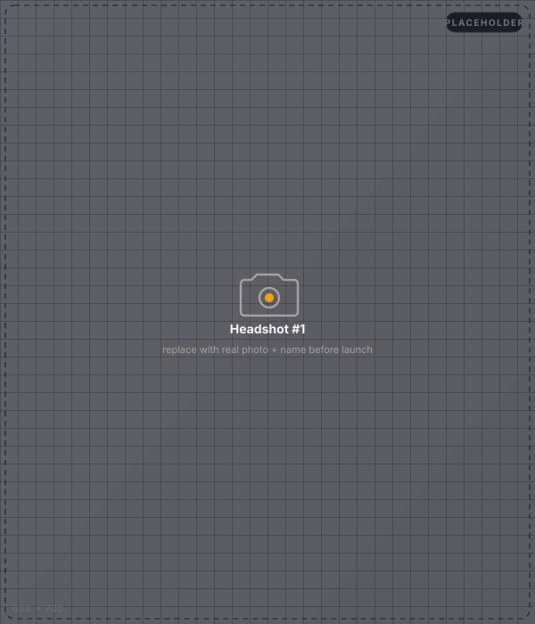
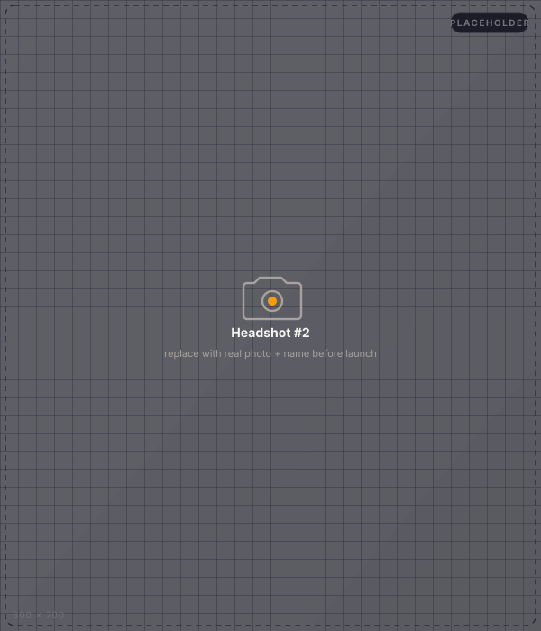
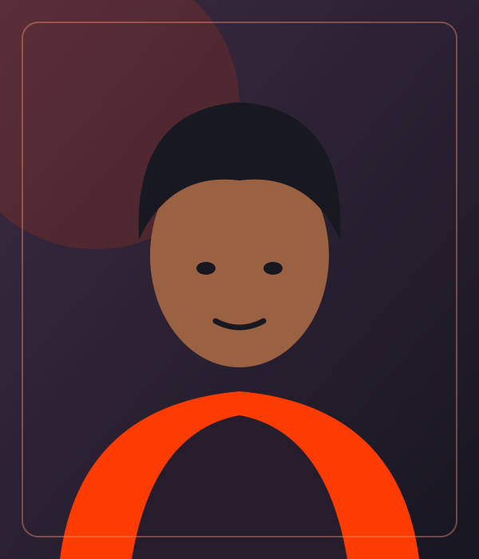
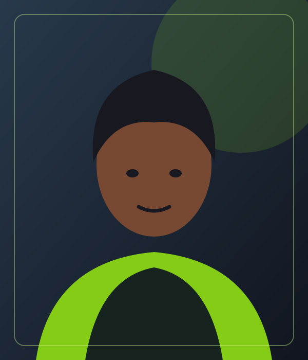

A small team.
A county-sized problem.
We're a small team working on a big idea: that the people who know the land best should also be the first to hear when it's in trouble. Here's who's building it.

Name TBD
The vision. The relationships with the county, the cooperatives, the herders. The reason this exists.

Name TBD
Pilot rollout. Training the extension officers. Running the focus groups. Making sure the field work actually happens.

Name TBD
Knows Isiolo. Knows pastoralism. Records the Borana and Turkana voices. Teaches the AI when it's wrong.

Denis Munene Ndegwa
Writes the code. The voice pipeline, the USSD menu, the dashboard. Keeps the lights on.
Who we work with.
JHUB Africa
Programme home. Engineering pipeline, demo facilities, the network behind the team.
Isiolo County Government
County livestock office, cooperative chairs, extension officers. The people on the ground who know the herders.
Africa's Talking
The voice, SMS and USSD layer. Sandbox-verified; awaiting paid production account.
Microsoft · OpenAI
Voice and language stack. Real-time speech, neural voices in Swahili and English. Pending quota.